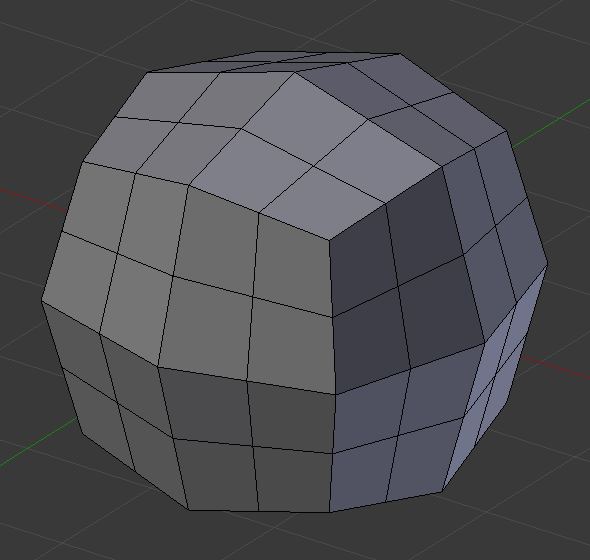
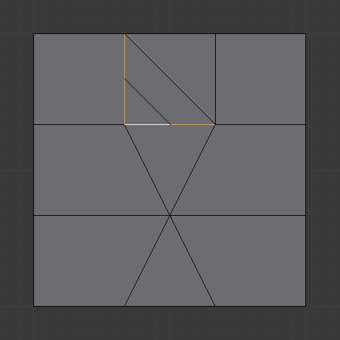
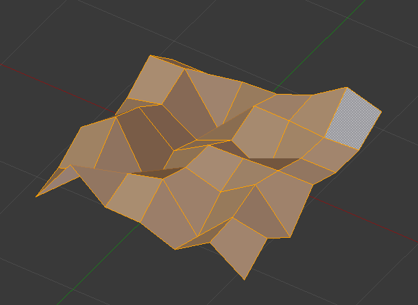

细分
参考
- 模式:
编辑模式
- 菜单:
细分工具将边和面切为两半或更多，添加新的顶点，并细分对应相关面。它通过将面和边切割为更小的单元，来增加分辨率。
该过程根据设置的不同，遵循一些规则：
当仅选中一个面的一条边时（三角模式），三角面会细分为两个三角面，四边形细分为三个三角面。
当一个面的两条边被选中时：
如果该面是三角形，两个新顶点以一条边相连，将该三角形细分为一个三角形和一个四边形。
如果该面是四边形，并且边是相邻的，那么根据 四边面角类型 的设置（详见下文），有 三种 可能的方式来分割四边形。
如果该面是四边形，且这两条边是相对的，两个新顶点以一条边相连，将其细分为两个四边形。
当一个面的三条边被选中时：
如果该面是三角形，则表示选中整个面，然后将其细分为四个更小的三角形。
如果该面是四边形，相对的两条边将以上文方式细分。然后，“中间” 的边经细分后，将如上文中仅选中一条边的情形一样影响新的 “小四边形”。
当四边形的一个面被选中，该面将被细分为四个更小的四边形。
当多边形（N-gon）的一个面被选中，各条边将被细分，但面将维持原状不细分。
选项
运行该工具后，工具 面板将呈现以下选项：
- 切割次数
指定每条边的切割次数。默认为 1，切为两等份。数值 2 表示切割为三等份，以此类推。
- 平滑度
置换细分以保持近似曲率。这种效果类似于表面细分修改器可能使网格变形的方式。

细分前网格。
 不加平滑的细分。

平滑度为 1 的细分结果。
- 四边面/三角面模式
强制细分为三角形或四边形，而非多边形（见下文范例）。该模式不能与 直接切分 边角类型同时使用。
- 四边面角类型
控制仅有两条相邻选定边的四边形的细分方式。
- 扇形:
将四边形细分为四个三角形组成的扇形，公共顶点为两选中边的对角顶点。
- 内侧顶点:
细分选中边，并且以两个新顶点创建一条边，生成一个小三角形。再细分新创建的边，内侧顶点 与对角顶点相连，细分结果为一个三角形和两个四边形。
- 路径:
首先连接选中边的对角端点，将该四边形细分成两个三角形，然后连接细分顶点。
- 直接切分:
细分选中边，在新的顶点之间创建一条边，生成一个小三角形加一个多边形。

扇形切分类型。
内侧顶点切分类型。
 路径切分类型。
- 分形
细分网格后，随机置换顶点。

细分前的平面。

常规细分。

增加分形后。
- 沿法线方向
沿法线方向置换顶点，而非随机方向。
 沿法线方向设置为 1 。
- 随机种
设置 分形 噪波的随机种，每个随机种都会产生不同的结果。
上文网格修改随机种后。
{kind=link}
{kind=link}
{kind=link}
{kind=link}
{kind=link}
示例
下面的几个范例展示了 细分 和 多等分 工具的各种可能性。注意细分后的选中元素。

示例网格。
一条边

一条边。 |

四边面/三角面模式。 |
两条三角边

|

四边面/三角面模式。 |
四边形的对边

|
四边面/三角面模式。 |
{kind=link}
四边形相邻边
|
扇形切分类型。 |
四边面/三角面模式。 |
{kind=link}
内侧顶点切分类型。 |

四边面/三角面模式。 |
路径切分类型。 |

四边面/三角面模式。 |
三条边

|
四边面/三角面模式。 |
{kind=link}
三角面

四边面/三角面模式。 |
{kind=link}
四边形的四条边

|

四边面/三角面模式。 |
创建多条切割线
两次细分后的三角形。 |

两次细分后的四边形。 |
{kind=link}